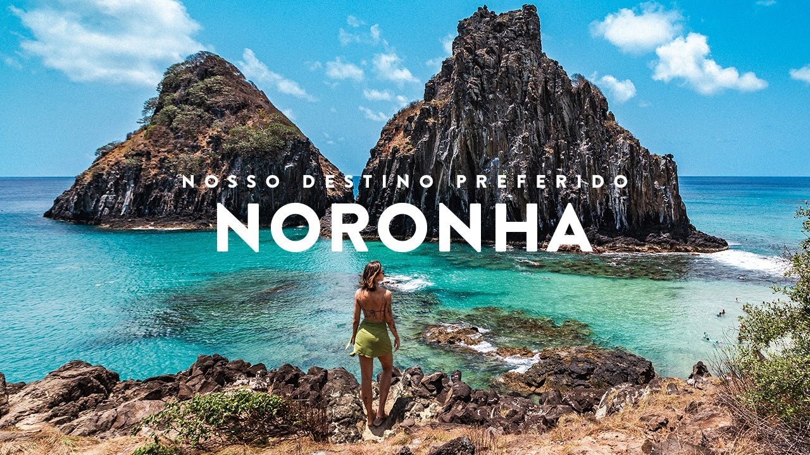

Conheça praias famosas como Sancho, Conceição e Baía dos Golfinhos.
Explore águas cristalinas e uma das maiores biodiversidades marinhas do Brasil.
Passeios de barco, trilhas ecológicas e experiências incríveis.
Fernando de Noronha é um arquipélago brasileiro localizado em Pernambuco, famoso por suas paisagens naturais, águas transparentes e turismo ecológico.
O arquipélago foi declarado Patrimônio Natural da Humanidade pela UNESCO e é considerado um dos destinos mais bonitos do mundo.
